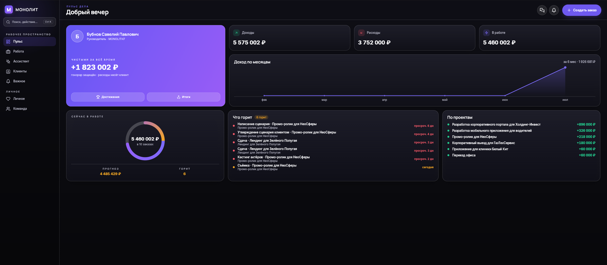

Дневник разработки · 18.07.2026
МОНОЛИТ на компьютере — новый десктоп-облик (beta)

МОНОЛИТ теперь на компьютере 🖥️
Тот же МОНОЛИТ, но с интерфейсом под большой экран Windows. Не растянутая мобилка: каждую вкладку пересобрали под десктоп — слева навигация, широкий рабочий стол, плотные панели. Тот же обсидиан и индиго, свет идёт изнутри.
Пульс дела — весь бизнес на одном экране: доходы, расходы, «в работе», график по месяцам, живое кольцо и лента «что горит».
Клиенты — картотека: по каждому клиенту сразу видно заказы и выручку, поиск и фильтры под рукой.
Центр важного — задачи, сигналы и команда в трёх колонках разом: что горит и кто отстаёт, без переключений.
Ассистент стал шире и получил панель контекста, Личное и Команда — свои раскладки. Приватность прежняя: сервер видит только зашифрованное, ключ остаётся у тебя.
Windows-версия в бете. Хотите попробовать на компьютере — напишите @sbphotoshoter.
МОНОЛИТ — учёт заказов, клиентов и денег одной фразой. Windows и Android, бесплатная бета.
Скачать Читать канал